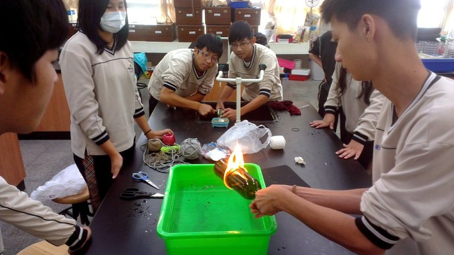

在此當中學習到如何團隊合作，並不單單只靠一人能成就大事的，使我們對於玻璃有更深的見解。
平常依賴老師，凡是需要老師的指導才知道下一步怎麼進行，但老師也是有該做的事，並不是每次都能抽空，所以我們靠著團體合作，一起達成目標。
玻璃給予人類許多方便的生活，藉由此機會，想告訴社會大眾玻璃在現今的地位是如此重要!，我們了解到玻璃的成分、起源、製作過程、應用等等。
使用網際網路比紙筆來的快速許多，而且網路不侷限於單一介紹有時候還會延伸許多資訊以供我們參考。
| 設備名稱 | 工具 | 用途 |
|---|---|---|
| 設備名稱 | 桌上型電腦 | 查資料、彙整資料.搜尋相關影片 |
| 設備名稱 | 筆記型電腦 | 繪圖 |
| 電腦軟體 | Photocap6.0 | 繪圖 |
| 電腦軟體 | Openoffice Draw | 繪圖 |
| 電腦軟體 | Microsoft word 2010 | 彙整資料 |
| 電腦軟體 | Microsoft Office FrontPage 2003 | 架設網站 |
| 電腦軟體 | Youtube | 查詢相關影片 |
| 一般設備 | 數位相機 | 拍攝參訪照片 |
| 場地 | 電腦教室 | 查詢資料、架設網站的地點 |
| 一般設備 | 理化教室 | 做玻璃切割小實驗 |
| 一般設備 | 台灣玻璃館 | 參觀使我們更加了解玻璃 |
| 一般設備 | 班上教室 | 討論相關事宜 |